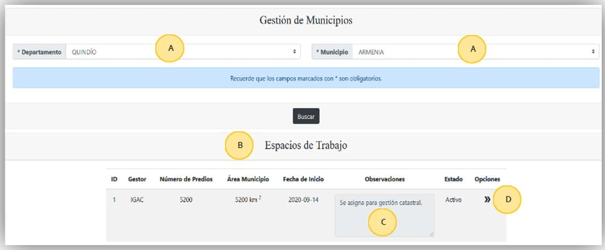

Descripción de la interfaz¶
La interfaz del Sistema se compone básicamente de una página de autenticación y otra página que es el contenedor de los módulos y las funcionalidades del Sistema de Transición. A continuación, en la imagen se explica cada componente de la interfaz.
Compuesta por las siguientes secciones:
La dirección web donde se encuentra alojado el Sistema, esta URL la proveerá la entidad encargada de administrar el Sistema.
Etiqueta de identificación de usuario, compuesto por el nombre de la entidad, nombre del usuario, perfil y rol.
Barra lateral que contiene el menú de módulos y funcionalidades del Sistema.
Módulos del Sistema: Gestión del municipio, Insumos, Administrador.
Funcionalidades asociadas a cada módulo del Sistema.
Página de presentación del Sistema (Acerca de…).
Función de contraer barra de menú lateral.
Bandeja de entrada con contador para tareas pendientes del usuario.
Banner de imágenes alusivas al levantamiento catastral en Colombia.
{kind=link}
La interfaz de cada funcionalidad cuenta con los siguientes elementos como se muestra en la imagen:
Selector de búsqueda
Tabla de resultados
Cajas de ingreso de datos
Iconos de Opciones para ejecución de acciones.

{kind=link}
Funcionalidades Básicas (Aplica para todos los roles)¶
Autenticación¶
Para ingresar al Sistema se debe digitar la URL http://multiproposito.igac.gov.co:8181/login y en el campo “Nombre de usuario“ digitar el usuario asignado y en el campo “Contraseña“ digitar la contraseña. Después de esto se dará ingreso al Sistema y se cargaran los menús correspondientes al rol definido para el usuario.
{kind=link}
Información de usuario¶
Una vez se ha ingresado, en la parte superior derecha se da clic en la flecha para desplegar las opciones de usuario, en donde se tiene la opción “Perfil“ como se ve en la imagen, al dar clic se tiene acceso al formulario de datos básicos del usuario.
{kind=link}
Cambiar contraseña¶
En la parte inferior del formulario de datos básicos del usuario se puede actualizar la contraseña de ingreso al Sistema, se debe ingresar la contraseña actual y luego la nueva contraseña y dar clic en “Cambiar contraseña“
{kind=link}
{kind=link}